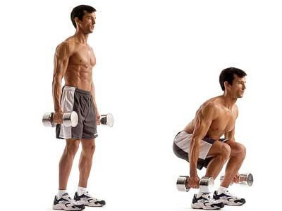
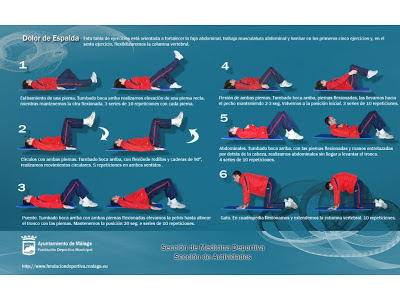

Los mejores ejercicios para fortalecer la espalda y corregir la postura
2021.12.08 10:40

Es noticia Factura luz Pueblos bonitos Aragón Efectos secundarios Vacuna tercera dosis Calendario lunar Calendario laboral Zaragoza Premios Lotería Navidad Variante ómicron Vacuna niños Aragón Zaragoza Huesca Teruel Deportes Real Zaragoza SD Huesca Baloncesto Nacional Internacional Economía Cultura Ocio Sociedad Opinión Gastronomía Salud Heraldo TV Heraldoteca Educación Newsletters Podcast Whatsapp Heraldo Deportes
Deportes
INICIAR SESIÓN REGISTRARSE SALIR SuscríbeteAragón
Zaragoza Fiestas del Pilar Huesca TeruelDeportes
Fútbol Real Zaragoza SD Huesca Baloncesto Balonmano Voleibol AficiónReal Zaragoza
Nacional
Internacional
Economía
Cultura
Los mejores ejercicios para fortalecer la espalda y corregir la posturaEjercicio y salud
Los mejores ejercicios para fortalecer la espalda y corregir la postura
Desarrollar los músculos para tener una espalda fuerte favorece la mejora de la postura y alivia dolores.
NOTICIA A. Gil CONTENIDO DE MARCA Ejercicios para la espalda que puedes hacer en casa. PixabayLa espalda es una de las zonas del cuerpo que más problemas dan: contracturas, cansancio, dolor por estar todo el día delante del ordenador, por no hacer ejercicio.. . Desde los lumbares hasta el cuello es necesario trabajar todos los músculos que conforman esta parte del cuerpo para alejar dolores y corregir nuestra postura corporal.
NOTICIAS RELACIONADAS Estiramientos y ejercicios para aliviar las molestias causadas por el teletrabajoHay una serie de ejercicios que tanto en casa como en el gimnasio nos pueden ayudar a corregir los vicios adquiridos en la silla delante del ordenador e incluso a dormir mejor si conseguir aliviar los dolores acumulados. Para algunos hará falta algo de equipamiento para otros será suficiente con el peso corporal , todo depende de nuestro nivel de práctica deportiva y de los objetivos de rendimiento o estéticos que queramos conseguir.
Superman . Tumbados bocabajo, con los brazos estirados por encima de la cabeza, habrá que levantar a la vez los brazos y las piernas. Este ejercicio fortalece la zona lumbar. Dorsales en el suelo . En la misma posición anterior, con una toalla entre las manos, despegaremos el tronco del suelo y retraeremos las escápulas hasta acercar la toalla a la altura de la barbilla. Lat machine . La dinámica es la misma que la del ejercicio anterior, pero utilizando esta máquina del gimnasio. Remo en máquina o en cable. Tanto en las máquinas guiadas como en los cables bajos, el remo consiste en acercar el peso hacia nuestro pecho retrayendo las escápulas y trabajando el dorsal, sin forzar los hombros. Hombro o deltoides posterior. Para trabajar la zona más alta de la espalda, nos colocaremos de pie y con las rodillas ligeramente flexionadas echaremos el tronco hacia adelante, sin curvar la lumbar. El movimiento consistirá en abrir los brazos desde el pecho hacia la espalda para activar este músculo.Además de estos ejercicios que nos permitirán ganar fuerza en la musculatura de la espalda, también los podemos combinar con estiramientos que ayuden a aliviar las presiones o el agarrotamiento en esta zona y así disfrutar de una espalda sana y sin dolores.
¿Quieres recibir todas nuestras propuestas de planes para mantenerte en forma? Apúntate y te enviaremos nuestra newsletter.
Conforme a los criterios de Más información EtiquetasSalud
Deportes
Lesiones
tagfree
Comentarios Debes estar registrado para poder visualizar los comentarios Regístrate gratis Iniciar sesión Debes estar suscrito para poder comentar Suscríbete © HERALDO DE ARAGON EDITORA, S.L.U.
Teléfono 976 765 000 / - Pº. Independencia, 29, 50001 Zaragoza - CIF: B99288763 - Inscrita en el Registro Mercantil de Zaragoza al Tomo 3796, Libro 0, Folio 177, Sección 8, Hoja Z-50564
Queda prohibida toda reproducción sin permiso escrito de la empresa a los efectos del artículo 32.1, párrafo segundo, de la Ley de Propiedad Intelectual
Teléfono 976 765 000 Otras webs del grupo Sitios webs del grupo de comunicación Henneo Editorial y Medios 20minutos La Información Diario del Alto Aragón Cinemanía Bluemedia Alayans Media Audiovisual Chip Audiovisual Factoría Plural Global Studio Tecnología Hiberus TI Industrial Distribución – DASA Impresión – Henneo Printing Services Imprenta Online
- Los mejores ejercicios para fortalecer la espalda y corregir la .
- Ejercicios de espalda en casa - Mundo Deportivo
- Los 15 mejores ejercicios para una espalda y dorsales en V
- Ejercicios para fortalecer la espalda sin hacernos daño
- 5 ejercicios básicos para lograr una espalda descomunal - AS .
- Los mejores ejercicios para acabar con el dolor de espalda
- 6 ejercicios con el propio peso para una espalda fuerte
- Los 11 mejores ejercicios para entrenar tu espalda en el .
- Guía de ejercicios para la parte baja de la espalda (Back .
- Ejercicios para la espalda en 15 minutos diarios - Mayo Clinic
- Los mejores ejercicios para fortalecer la espalda y corregir la .
en casa · Pues bien, este ejercicio de las dominadas deslizantes es uno de los más reputados a la hora de fortalecer y . - Ejercicios de espalda en casa - Mundo Deportivo
- Los 15 mejores ejercicios para una espalda y dorsales en V
- Ejercicios para fortalecer la espalda sin hacernos daño
- 5 ejercicios básicos para lograr una espalda descomunal - AS .
- Los mejores ejercicios para acabar con el dolor de espalda
- 6 ejercicios con el propio peso para una espalda fuerte
- Los 11 mejores ejercicios para entrenar tu espalda en el .
- Guía de ejercicios para la parte baja de la espalda (Back .
- Ejercicios para la espalda en 15 minutos diarios - Mayo Clinic
en casa · Pues bien, este ejercicio de las dominadas deslizantes es uno de los más reputados a la hora de fortalecer y .
 